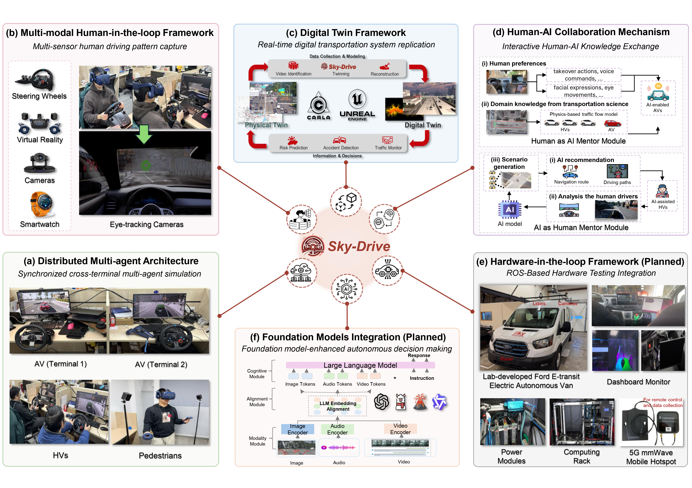
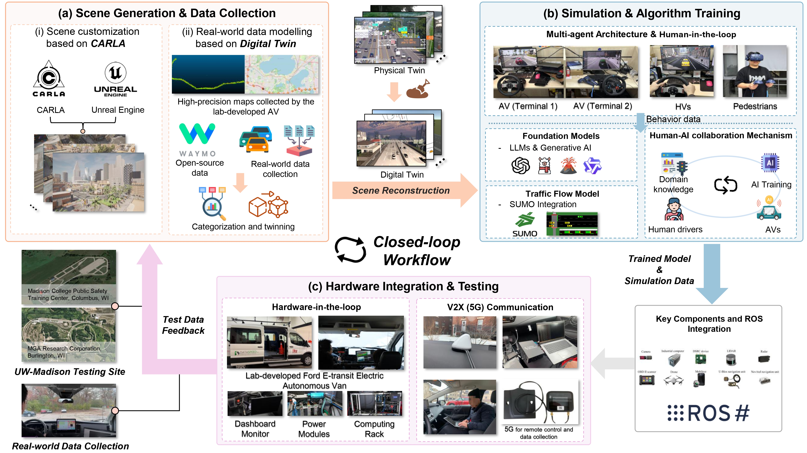
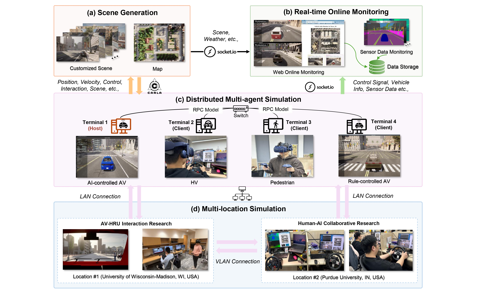
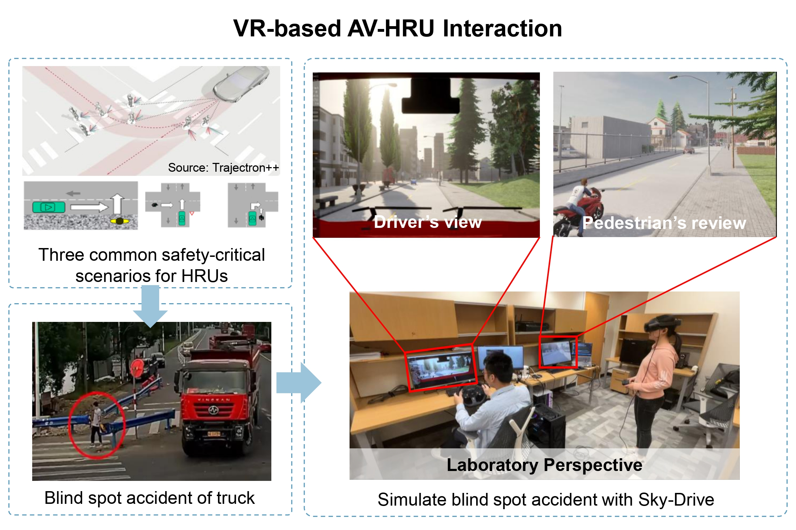
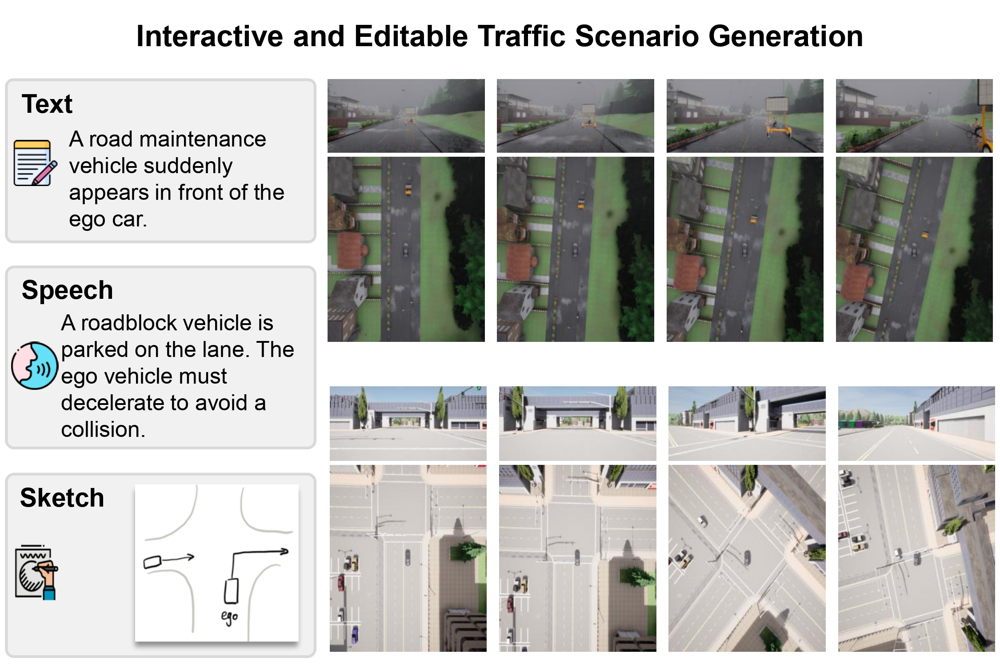
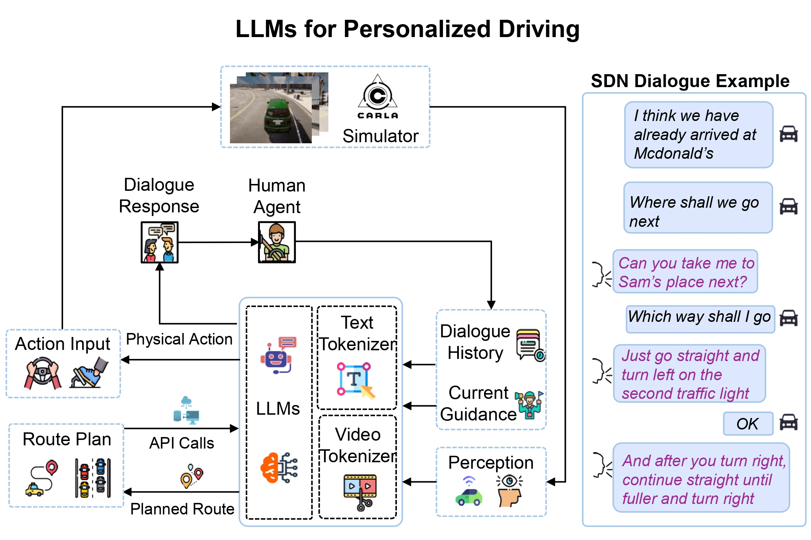

Sky-Drive: A Distributed Multi-Agent Simulation Platform for Socially-Aware and Human-AI Collaborative Future Transportation
Abstract
Recent advances in autonomous system simulation platforms have significantly enhanced the safe and scalable testing of driving policies. However, existing simulators do not yet fully meet the needs of future transportation research-particularly in enabling effective human-AI collaboration and modeling socially-aware driving agents. This paper introduces Sky-Drive, a novel distributed multi-agent simulation platform that addresses these limitations through four key innovations: (a) a distributed architecture for synchronized simulation across multiple terminals; (b) a multi-modal human-in-the-loop framework integrating diverse sensors to collect rich behavioral data; (c) a human-AI collaboration mechanism supporting continuous and adaptive knowledge exchange; and (d) a digital twin framework for constructing high-fidelity virtual replicas of real-world transportation environments. Sky-Drive supports diverse applications such as autonomous vehicle-human road users interaction modeling, human-in-the-loop training, socially-aware reinforcement learning, personalized driving development, and customized scenario generation. Future extensions will incorporate foundation models for context-aware decision support and hardware-in-the-loop testing for real-world validation. By bridging scenario generation, data collection, algorithm training, and hardware integration, Sky-Drive has the potential to become a foundational platform for the next generation of human-centered and socially-aware autonomous transportation systems research.







Thank you for your interest in our work! 🚗 ✨
© Copyright Zilin Huang · Last updated